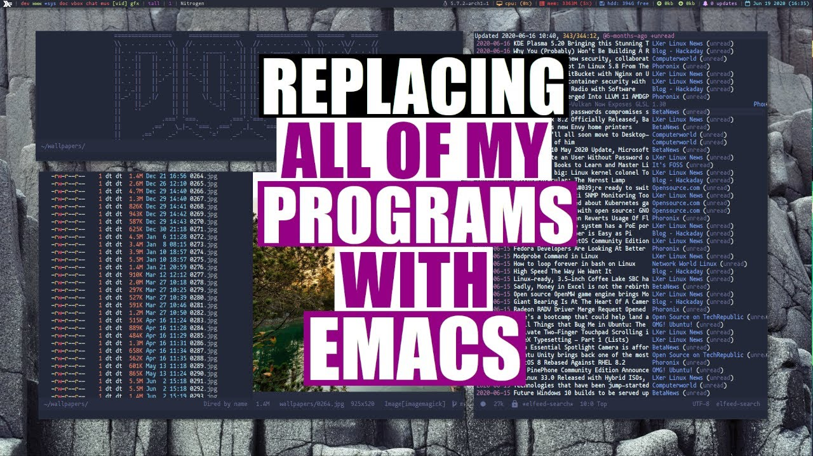

STREAM
------------------------------------------------------------------------------- <----------------------------------- 79 -----------------------------------> +-----------------------------------------------------------------------------+ | PROJETO 1 - REDES DE COMPUTADORES [CIC0124] | +-----------------------------------------------------------------------------+ | Grupo: José Henrique Zeferino - 190125985 Profa.: Priscila Solís Barreto | | Arthur Martines - XXXXXXXXX | | Olivier Liudy - XXXXXXXXX | +-----------------------------------------------------------------------------+ Search here >> _______________________________________________________________


I'm Replacing All Of My Programs...With Emacs
11:57
resolution: 1080p - 60fps
data de upload
pequena descrição do vídeo!?
download
tempo estimado para download!?
para teste